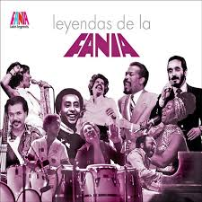

Fania All-Stars es una agrupación de salsa y música caribeña,
reconocida por su fusión con otros géneros como el rock, jazz, mambo,
soul y reggae. Fundada en 1968 en Nueva York, Estados Unidos, reúne a
los artistas más destacados del sello Fania Records y ha contado con
la participación de músicos invitados de diversos estilos.
La historia del grupo está estrechamente ligada a la
internacionalización de la salsa como concepto comercial para la
música latina,siendo considerada una de las formaciones más influyentes del género.
Desde 1966 el sello Fania Records experimentó una gran acogida por
parte del público, por lo que en diciembre de 1967, Jack Hooke y Ralph
Mercado le propusieron a Jerry Masucci y a Johnny Pacheco,
propietarios de este sello, presentar en exhibición a todos sus
artistas, que ahora incluía a los líderes de orquesta ya establecidos
como Ray Barretto y al copropietario de Fania, Johnny Pacheco, junto
con la nueva generación de músicos directores: Willie Colón, Larry
Harlow, Monguito, Joe Bataan, Louie Ramírez, Ralph Roblés y Bobby
Valentín. La idea era grabar una sesión en vivo, que serviría como una
vitrina para el sello, utilizando el formato all-stars (“todas las
estrellas”).

LEGADO MUSICAL
60 Años
Fania Récords es considerada una de las etiquetas discográficas más influyentes en la historia de la música latina, y su legado continúa inspirando a nuevas generaciones de músicos y fans luego de 60 años desde su fundación.
Su legado musical sigue vibrando en la cultura latina y global, y su importancia cultural no se limita al campo de la música, sino a la expansión del género de la salsa y la promoción de algunos de los artistas latinos más influyentes del siglo pasado.
Para celebrar el 60 aniversario de esa fundación, a partir de ahora habrá un día de Fania: así se proclamó este jueves por la tarde la ciudad de Nueva York, a modo de honrar su aporte a la música y a la cultura latina . La ceremonia se llevó a cabo en el Museo de El Barrio en East Harlem.